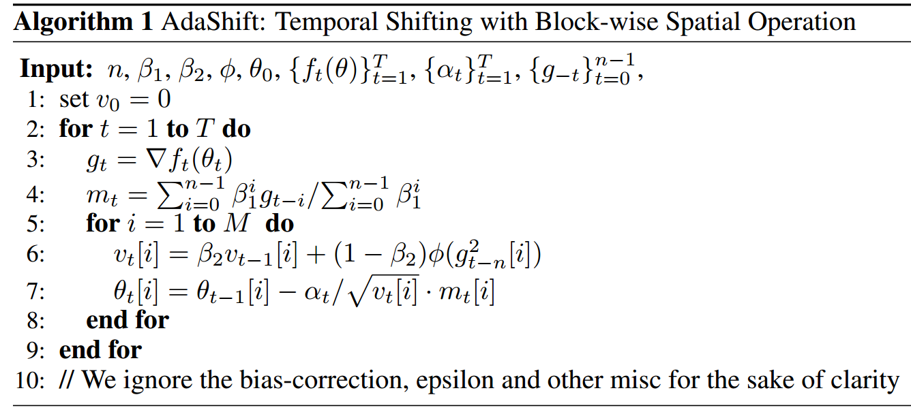
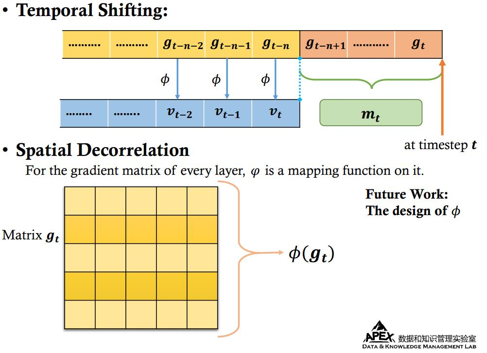

AdaShift: Decorrelation and Convergence of Adaptive Learning Rate Methods
Fix the non-convergence of Adam
The Nonconvergence of Adam
Update rule of Adam:
$$
\begin{aligned}
& g_t = \nabla f_t\\
& m_t = \beta_1 m_{t-1} + (1-\beta_1) g_t\label{eq:1}\\
& v_t = \beta_2 v_{t-1} + (1-\beta_2) g_t^2\label{ew:2}\\\
&\theta_{t+1} = \theta_t - \frac{\alpha_t}{\sqrt{v_t}}m_t
\end{aligned}
$$
Reddi et al. pointed out two type of non-convergence problem for Adam:
- Sequential Counterexample:
$$f_{t}(\theta)=\left\{\begin{array}{ll}{C \theta,} & {\text { if } t \bmod d=1} \\ {-\theta,} & {\text { otherwise }}\end{array}\right.$$
- Stochastic Counterexample:
$$ f_{t}(\theta)=\left\{\begin{array}{ll}{C \theta,} & {\text { with probability } p=\frac{1+\delta}{C+1}} \\ {-\theta,} & {\text { with probability } 1-p=\frac{C-\delta}{C+1}}\end{array}\right. $$
and they claim after fixing the issue about positive definiteness of $\Gamma_{t+1}=\frac{\sqrt{V_{t+1}}}{\alpha_{t+1}}-\frac{\sqrt{V_{t}}}{\alpha_{t}}$, the convergence will be guaranteed. Accordingly, Reddi et al. proposed AMSGrad and AdamNC. However, these algorithms keep a non-decreasing $v_t$ or a long-memorization of gradients, which will slow down the training if a quite large gradient emerges. Therefore, a deep understanding on these non-convergence counterexamples is needed.
Our theoretical analysis
Some warm up conclusions:
- Both $\beta_1$ and $\beta_2$ influence the direction and speed of optimization.
- Critical value of $C$, at which Adam gets into non-convergence, increases as $\beta_1$ and $\beta_2$ getting large.
- For any fixed $C$, as long as $\beta_1$ and $\beta_2$ large enough, non-convergence will disappear.
The Cause of Non-Convergence: Unbalanced Step Size
- $v_t$ is positively correlated to the scale of gradient $g_t$
- It results in a decreasing step size for a large gradient and a increasing step size for a small gradient
- It is common for adaptive optimizers.
- Our tool: Net Update Factor - consider the effect of every gradients on the whole optimization process:
$$ net(g_t) \triangleq \sum_{i=t}^{\infty}\frac{~\alpha_i}{\sqrt{v_i}}[(1-\beta_1)\beta_1^{i-t}g_t] = k(g_t) \cdot g_t $$
- Our theoretical conclusions:
- $k( C ) < k( -1 )$
- Decorrelating $v_t$ and $g_t$ will lead to convergence.
- Rethinking the role of $v_t$:
- $v_t$ reflects the gradient scale, and adjusts learning rate dynamically.
- In AdaShift, current $v_t$ is independent with $g_t$, but the distribution of $v_t$ is close to $g_t$’s, and changes dynamically with $g_t$’s.
AdaShift Optimizer

The decorrelation operations:
- Temporal Shift: we postpone the calculation of $v_t$, using $g_{t-n}$ rather than $g_t$ to update $v_t$.
- This decorrelation is based on the assumption of independence between mini-batches.
- Spatial Decorrelation: Layer-wise adaptive learning rate.
- For every seperate layer, we add a function $\phi$ over its gradient matrix ( or vector ), outputing a scalar to calculate shared $v_t$ for all parameters in this layer.
- In our experiments, we choose $\phi$ as maximum function over gradient matries. Better design of $\phi$ is left as future work.
- We no longer interpret $v_t$ as the second moment of $g_t$. Instead, it is a random variable, independent of $g_t$, while at the same time, reflects the overall gradient scale.
- Adam sometimes does not generalize better than SGD, which might be related with the excessive learning rate adaptation in Adam. As a compromise between SGD and Adam, AdaShift has an improvement in term of generalization performance.
- A more intuitive explanation of AdaShift: 